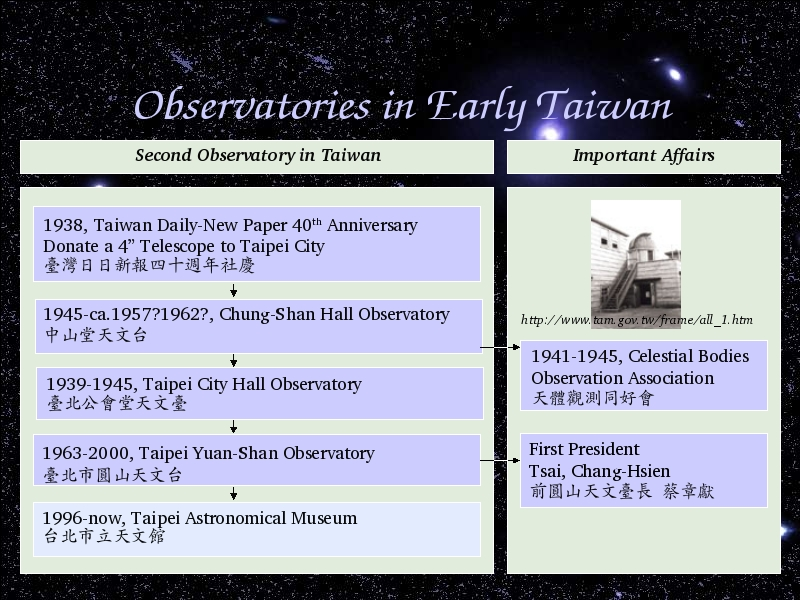

Voice Over:
The second Observatory in Taiwan is Taipei City Hall Observatory.
The telescope came from Taiwan Daily-New Paper.
1938, Taiwan Daily-New Paper was 40 years old, they donate a 4 inch telescope to Taipei City.
The detail of the donation from Taiwan Daily-New Paper shows next page.
And then Taipei City Government started to build a dome in Taipei City Hall.
Taipei City Hall Observatory started from 1939.
The Second astronomical club in Taiwan, Celestial Bodies Observation Association, also started from 1941.
1945, Chinese Government took over Taiwan, Taipei city Hall Observatory changed name to Chung-Shan Hall Observatory.
Till 1963, more and more people living in the center of the city, so Chung-Shan Hall Observatory moved to Yuan-Shan.
The first Taiwanese President of Astronomical Observatory is Mr. Tsai, Chang-Hsien.
Here I didn't find the exactly year when Chung-Shan Hall Observatory dome be destroyed. Even the people in Astronomical Museum doesn't know the answer.
Of course the 4-inch telescope also moved to Taipei Yuan-Shan Observatory.
1996, Taipei Yuan-Shan Observatory extended to Taipei Astronomical Museum.